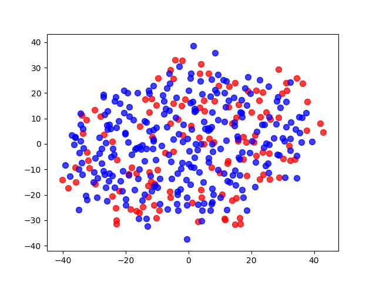

Supervised Learning: Building a Student Intervention System
1 Obective
The goal of this project is to identify students who might need early intervention. We want to predict whether a given student will pass or fail based on information about his life and habits. Therefore we approach this task as a classification problem with two classes, pass and fail.
2 Dataset
In what follows we will be working with part of the Student Performance Data Set from the UCI machine learning repository. It is composed of 395 data points with 30 attributes each. The 31’st attribute indicates whether the student passed or failed. Here is a brief description of each feature:
2.1 Attributes for student-data.csv:
- school - student’s school (binary: “GP” or “MS”)
- sex - student’s sex (binary: “F” - female or “M” - male)
- age - student’s age (numeric: from 15 to 22)
- address - student’s home address type (binary: “U” - urban or “R” - rural)
- famsize - family size (binary: “LE3” - less or equal to 3 or “GT3” - greater than 3)
- Pstatus - parent’s cohabitation status (binary: “T” - living together or “A” - apart)
- Medu - mother’s education (numeric: 0 - none, 1 - primary education (4th grade), 2 – 5th to 9th grade, 3 – secondary education or 4 – higher education)
- Fedu - father’s education (numeric: 0 - none, 1 - primary education (4th grade), 2 – 5th to 9th grade, 3 – secondary education or 4 – higher education)
- Mjob - mother’s job (nominal: “teacher”, “health” care related, civil “services” (e.g. administrative or police), “at_home” or “other”)
- Fjob - father’s job (nominal: “teacher”, “health” care related, civil “services” (e.g. administrative or police), “at_home” or “other”)
- reason - reason to choose this school (nominal: close to “home”, school “reputation”, “course” preference or “other”)
- guardian - student’s guardian (nominal: “mother”, “father” or “other”)
- traveltime - home to school travel time (numeric: 1 - <15 min., 2 - 15 to 30 min., 3 - 30 min. to 1 hour, or 4 - >1 hour)
- studytime - weekly study time (numeric: 1 - <2 hours, 2 - 2 to 5 hours, 3 - 5 to 10 hours, or 4 - >10 hours)
- failures - number of past class failures (numeric: n if 1<=n<3, else 4)
- schoolsup - extra educational support (binary: yes or no)
- famsup - family educational support (binary: yes or no)
- paid - extra paid classes within the course subject (Math or Portuguese) (binary: yes or no)
- activities - extra-curricular activities (binary: yes or no)
- nursery - attended nursery school (binary: yes or no)
- higher - wants to take higher education (binary: yes or no)
- internet - Internet access at home (binary: yes or no)
- romantic - with a romantic relationship (binary: yes or no)
- famrel - quality of family relationships (numeric: from 1 - very bad to 5 - excellent)
- freetime - free time after school (numeric: from 1 - very low to 5 - very high)
- goout - going out with friends (numeric: from 1 - very low to 5 - very high)
- Dalc - workday alcohol consumption (numeric: from 1 - very low to 5 - very high)
- Walc - weekend alcohol consumption (numeric: from 1 - very low to 5 - very high)
- health - current health status (numeric: from 1 - very bad to 5 - very good)
- absences - number of school absences (numeric: from 0 to 93)
- passed - did the student pass the final exam (binary: yes or no)
2.2 Loading the data
2.2.1 Imports
The following python libraries are used in this analysis.
import numpy as np import pandas as pd import matplotlib.pyplot as plt from tabulate import tabulate import pickle
2.2.2 Pre-process
Let us first observe what the graduation rate is for the class;
student_data = pd.read_csv("student-data.csv") n_students = student_data.shape[0] n_features = student_data.shape[1] - 1 n_passed = sum([1 for y in student_data['passed'] if y == 'yes']) n_failed = sum([1 for n in student_data['passed'] if n == 'no']) grad_rate = 100.*n_passed/(n_passed + n_failed) tabulate( [["Total number of students: ",n_students], ["Number of students who passed: ",n_passed], ["Number of students who failed: ",n_failed], ["Number of features: ",n_features], ["Graduation rate of the class:", "{:.2f}%".format(grad_rate)]], tablefmt="grid")
This gives us the following figures;
| Total number of students: | 395 |
| Number of students who passed: | 265 |
| Number of students who failed: | 130 |
| Number of features: | 30 |
| Graduation rate of the class: | 67.09% |
Now we will separate the data into the feature columns and our prediction target, i.e., feature “passed”.
feature_cols = list(student_data.columns[:-1]) # all columns but last are features target_col = student_data.columns[-1] # last column is the target/label X_all = student_data[feature_cols] # feature values for all students y_all = student_data[target_col] # corresponding targets/labels
Addiontally, we must transform all categorical features into binary/numeric ones in order to be processed by subsequent algorithms. Pandas’ get_dummies function will come in handy.
def preprocess_features(X): outX = pd.DataFrame(index=X.index) # output dataframe, initially empty # # Check each column for col, col_data in X.iteritems(): # # Change the data type for yes/no columns to int if col_data.dtype == object: col_data = col_data.replace(['yes', 'no'], [1, 0]) # # For other categories convert to one or more dummy variables if col_data.dtype == object: col_data = pd.get_dummies(col_data, prefix=col) # e.g. 'school' => 'school_GP', 'school_MS' # outX = outX.join(col_data) # collect column(s) in output dataframe return outX
X_all = preprocess_features(X_all)
Now we are ready to split the data into training and test sets. Approximately 75% of the data will be used for training. This will leave 300 training samples and 95 test samples. We will employ Sci-kit learn’s train_test_split function to perform the data split.
from sklearn.model_selection import train_test_split X_train, X_test, y_train, y_test = train_test_split( X_all, y_all, test_size = .24, random_state = 0) # # "Training set: {} samples".format(X_train.shape[0]), "Test set: {} samples".format(X_test.shape[0])
2.3 Data Exploration
To identify whether it is appropriate to treat the data under a single model, that is, to identify whether its a manifold of multiple charts or a single chart, we employ a t-sne projection. We’ll project to 2-dimensions with red labeling failed and blue labeling passing data points. This may or may not reveal some intrinsic clustering relative to our feature of interest ‘passed’. It is recommended for t-sne to be fed features scaled to simlar ranges, so this is the first pre-process step.
from sklearn.preprocessing import MinMaxScaler # scaler = MinMaxScaler() uX_all = scaler.fit_transform(X_all)
Since our data set is not large we can indulge in the exact t-sne algorithm instead of the speedier ‘barnes-hut’.
from sklearn.manifold import TSNE # model = TSNE(n_components=2, early_exaggeration=4.0, learning_rate=1000, n_iter=1000, init='pca', random_state=0, method='exact') # clusters = model.fit_transform(uX_all)
# Painting cluster data according to pass or fail x_fail, y_fail = zip(*[ tuple(pt) for i, pt in enumerate(clusters) if y_all[i] == 'no']) x_pass, y_pass = zip(*[ tuple(pt) for i, pt in enumerate(clusters) if y_all[i] == 'yes']) # # Build plot ax = plt.subplot(111) ax.scatter(x_fail, y_fail, s=50, c='red', alpha=0.5, label="student failed") ax.scatter(x_pass, y_pass, s=50, c='blue', alpha=0.5, label="student passed") # # Saving plt.savefig("./figures/t-sne_all.png")

Figure 1: T-SNE 2-d projection all sample points
T-SNE reveals no obvious clustering of the data itself, nor of its pass/fail labeling. We will treat the data under a single model.
3 Training and Evaluating Models
3.1 Baseline Performance
After an analysis of several algorithms, the details of which can be found here, we will proceed with the binary classification using a DecisionTree classifier and a K-neighbors classifier for reference.
Kfold cross validation can be used to get the maximum use of a small data set like the one here. We apply Kfold cross-validation on the training set with 10 folds to have a basic handle on how the models perform out of the box.
from sklearn.tree import DecisionTreeClassifier from sklearn.neighbors import KNeighborsClassifier # from sklearn.cross_validation import KFold # # Setting up KFold cross_validation object kf = KFold(X_train.shape[0], 10) # # Array of classifiers clfs = [DecisionTreeClassifier(criterion = "entropy"), KNeighborsClassifier(n_neighbors = 3)] # #Gathering Table column and index labels classifier_names = [clf.__class__.__name__ for clf in clfs] benchmarks = ["Training time", "F1 score training set","Prediction time", "F1 score test set"] table = pd.DataFrame(columns = classifier_names, index = benchmarks) # # Fit Classifiers and average the times and f1 scores resulting from KFold (10 folds) for clf in clfs: classifier = clf.__class__.__name__ t_test = 0.0 t_train = 0.0 F1_test = 0.0 F1_train =0.0 # #Averaging scores and seconds accross the folds for tr_i ,t_i in kf: #Train (k-1 buckets) t_train += timeTraining(clf, X_train.iloc[tr_i], y_train.iloc[tr_i]) pred_train_set = predictAndTime(clf, X_train.iloc[tr_i])[0] F1_train += F1(y_train.iloc[tr_i], pred_train_set) #Test (kth bucket) pred_test_set, t_t = predictAndTime(clf,X_train.iloc[t_i]) t_test += t_t F1_test += F1(y_train.iloc[t_i], pred_test_set) # #Filling table table[classifier]['Training time'] = "{:10.4f} s".format(t_train/10) table[classifier]['F1 score training set'] = F1_train/10 table[classifier]['Prediction time'] = "{:10.4f} s".format(t_test/10) table[classifier]['F1 score test set'] = F1_test/10
| DecisionTreeClassifier | KNeighborsClassifier | |
| Training time | 0.0060 s | 0.0008 s |
| F1 score training set | 1.0 | 0.889300900467 |
| Prediction time | 0.0003 s | 0.0018 s |
| F1 score test set | 0.708666825808 | 0.780716646689 |
The results above show that the tree scores perfectly on the training set and it’s outperformed by KNN on the test set, with 0.709 to KNN’s .781. The tree is most likely overfitting. We will tune both models with a grid search.
3.2 Gridsearch Tuning
# Imports from sklearn import grid_search from sklearn.metrics import make_scorer # scorer = make_scorer(F1) # # GridSearch parameters for Tree tree_param = { 'n_estimators' : range(2,7),'criterion': ["entropy", "gini"], 'max_features':["sqrt", "log2"], 'max_depth': range(2,11), 'min_samples_split':range(2,9), 'min_samples_leaf':range(1,9) } # # Gridsearch parameters for KNN neigh_param = {'n_neighbors' : [3,5,10,20,25,30,40], 'weights' : ['uniform', 'distance'], 'p':[1,2,3,5,10], 'algorithm' : ['ball_tree', 'kd_tree', 'brute']} # #Perform grid Search def gridIt(clf, params): #Grid search folds = 10, for consistency with previous computations grid_clf = grid_search.GridSearchCV(clf, params, scorer, n_jobs=4, cv = 10) print clf.__class__.__name__ print "Grid search time:", timeTraining(grid_clf, X_train, y_train) print "Parameters of tuned model: ", grid_clf.best_params_ y_pred, predict_t = predictAndTime(grid_clf, X_test) print "f1_score and prediction time on X_test, y_test: " print F1(y_test, y_pred), predict_t print '------------------\n' # gridIt(KNeighborsClassifier(), neigh_param) # gridIt(RandomForestClassifier(), tree_param)